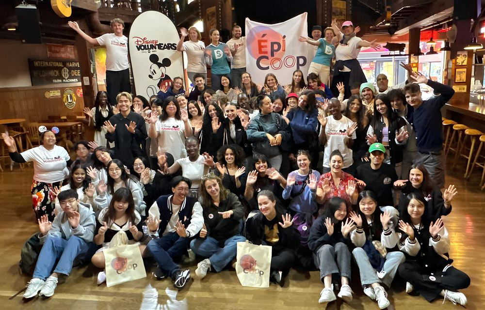

Journée à Disneyland Paris

Organisation d'une journée solidaire à Disneyland Paris pour une centaine de personnes accompagnées par EPICOOP, en partenariat avec les bénévoles Disney VoluntEARS.
100Personnes accompagnées
Organisation
Partenariat Disneyland Paris
EPICOOP PSL